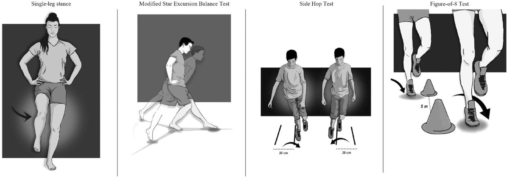
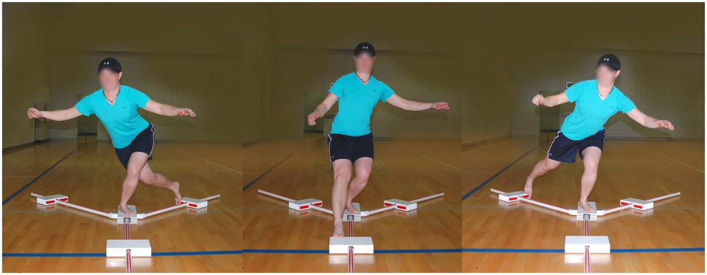

踝關節扭傷與慢性不穩定：從急性處置到重返運動
外側踝關節扭傷是最常見的運動傷害，約四成會發展成慢性踝關節不穩定（CAI）[1]。這篇從急性期怎麼處理、CAI 該練什麼，一路整理到「什麼時候可以回場上」，最後附一個 Ankle-GO 互動計分器。
重點摘要
- 急性期以護踝或貼紮，加上運動治療效果最好；消炎止痛藥可以用，但可能抑制正常癒合 [2]。
- CAI 的運動治療，平衡＋肌力訓練，再加徒手治療或乾針，在功能、動態平衡與疼痛上排名最前 [5]。
- 解剖性韌帶穩定手術後，平均約 12.5 週重返運動，83% 回到傷前水準 [9]。
- Ankle-GO 滿分 25 分：傷後 2 個月低於 8 分，4 個月內較難回到傷前水準 [11]，兩年內再扭傷風險也較高 [12]。
一、急性扭傷怎麼處理
Vuurberg 等人 2018 年在 BJSM 發表的臨床指引重點如下 [2]：
- 評估時機：韌帶受損程度，在受傷後 4 到 5 天做延遲性理學檢查最可靠。
- 固定與支撐：短時間固定可以緩解疼痛腫脹，但外側韌帶斷裂的病人，最能從貼紮或護踝搭配運動治療中獲益。
- 消炎止痛藥（NSAIDs）：可以減輕疼痛與腫脹，但不是沒有副作用，而且可能抑制正常的癒合過程，使用要謹慎。
- 治療方向：有監督的運動治療優於被動治療，因為它能幫助恢復關節的功能性穩定。
- 手術：保留給經過完整運動治療仍無效的人。
- 預防再扭傷：護踝是有效的選項。
軟組織傷害的處理原則 PEACE & LOVE 也提出類似看法，在急性期避免使用消炎類的處置，以免影響正常修復 [3]。
二、哪些人容易變成慢性不穩定
Chen 等人 2026 年的多中心研究，追蹤 474 位首次急性外側踝扭傷、兩週內做過 MRI 的病人。24 個月後，34.4% 發展成 CAI [4]。
獨立預測因子有三個 [4]：
| 預測因子 | 勝算比（OR） |
|---|---|
| 年齡（每增加一歲） | 1.07 |
| 距骨骨軟骨病灶（TOL） | 1.35 |
| 距舟韌帶（TNL）損傷 | 1.48 |
某些組合會讓風險加乘，例如距骨骨軟骨病灶合併男性或嚴重跟腓韌帶損傷，協同指數 3.24 到 4.45 [4]。這是回溯性研究，可以幫助及早辨識高風險的人，但不是每個扭傷都需要照 MRI。
三、CAI 運動治療：哪種組合最有效
網絡統合分析：44 篇隨機對照試驗
Yang 等人 2025 年在 JOSPT 比較各種物理治療方式對 CAI 的效果 [5]：
- 平衡＋肌力訓練，再加徒手治療或乾針：在功能（FAAM-ADL、FAAM-Sport）、動態平衡（SEBT 前方、後內、後外）和疼痛上排名最前。
- 多元運動＋徒手治療：對改善踝背屈活動度最好。
- 太極：對改善主觀穩定感最有潛力。
別忘了髖關節
Hou 等人 2026 年統合 9 篇隨機對照試驗、306 人：CAI 病人加做髖部肌力訓練，SEBT/YBT 三個方向的伸展距離都進步，以後內與後外方向最明顯；靜態平衡與 FAAM 分數也改善 [6]。
PNF 本體感覺神經肌肉誘發術
Yin 等人 2025 年統合 12 篇隨機對照試驗、405 位 CAI 病人 [7]：
| 結果指標 | 與對照組相比 |
|---|---|
| Y Balance Test | WMD 3.61（進步） |
| SEBT | WMD 5.50（進步），八個方向都優於對照組 |
| 踝周肌力 | SMD 0.19（進步），蹠屈與背屈最明顯 |
| 疼痛 VAS | WMD −1.39（下降） |
| 踝關節不穩定問卷 | WMD 2.91（進步） |
| 內翻關節位置覺、背屈活動度 | 沒有顯著差異 |
四、韌帶手術後的重返運動
Li 等人 2024 年統合 25 篇研究、1384 位做解剖性外側韌帶穩定手術的 CAI 病人 [9]：
- 95% 回到運動，83% 回到傷前水準，87% 回到競技運動。
- 平均重返運動時間 12.45 週（95% CI 10.8–14.1 週）。
- 年齡每增加 10 歲，重返失敗機率增加 6%；BMI 每增加 5，增加 4%。
- 關節鏡與開放手術、修復與重建、早期與延遲負重之間，重返運動率沒有差異。
術後什麼時候開始動？Vopat 等人 2020 年比較了 28 篇研究、1457 位韌帶修復病人 [10]：早期活動（術後 3 週內）功能分數較高，但前抽屜與距骨傾斜的鬆弛度較大，併發症率也較高（11.4% vs 3.1%）；兩組重返運動沒有差異。最佳時程仍需要更多隨機試驗確認。
五、重返運動評估：PAASS、ROAST 與 Ankle-GO
ROAST：急性期的臨床評估
國際踝關節聯盟（International Ankle Consortium）的共識 [8]：急性外側踝扭傷的最低評估標準，包括確認受傷機轉，以及評估踝關節骨骼與韌帶。他們也提出 ROAST（以復健為導向的評估），用來找出與 CAI 有關的機械性與感覺動作缺損。
PAASS：重返運動要看哪些面向
Smith 等人 2021 年邀集 155 位國際專家做三輪 Delphi，共 16 個評估項目達成共識，歸入五個領域，專家同意度 98% [13]：
- Pain 疼痛：運動中與過去 24 小時
- Ankle impairments 踝關節缺損：活動度、肌力、肌耐力、爆發力
- Athlete perception 運動員感受：踝關節信心與穩定感、心理準備度
- Sensorimotor control 感覺動作控制：本體感覺、動態姿勢控制與平衡
- Sport/functional performance 運動功能表現：單腳跳、跳躍與敏捷、專項動作、能否完成整場訓練
PAASS 告訴我們「要看什麼」，但沒有指定測驗。Ankle-GO 就是依照 PAASS 等文獻挑出測驗，組成可以計分的工具 [11]。
Ankle-GO：四項測驗＋兩份問卷，滿分 25 分

- 單腳站立（SLS）：赤腳單腳站、膝微彎約 10°、雙手叉腰、閉眼 20 秒，計算錯誤次數（手離開髖、抬腳跟或前腳掌、睜眼等）[11]。
- 改良星狀偏移平衡測驗（mSEBT）：站在 Y 字中央，對側腳往前、後內、後外三個方向盡量伸遠，距離以腿長標準化，三方向平均為綜合分數（COMP）[11]。
- 側向跳（SHT）：在相距 30 公分的兩條線之間，盡快左右來回跳 10 次 [11]。
- 8 字形測驗（F8T）：繞著相距 5 公尺的兩個標誌，用單腳跳盡快完成兩圈（共 20 公尺）[11]。
- 兩份問卷：FAAM（日常生活與運動兩個分量表）與 ALR-RSI（重返運動的心理準備度）[11]。
四項功能測驗中，沒有出現不穩定感就各加 1 分。Hertel 等人 2006 年發現，SEBT 八個方向中後內方向最能代表整體表現 [14]，這也是 Ankle-GO 對後內方向另外加分的原因之一。

計分方式
| 項目 | 結果與得分 | 不穩定感／加分 | 滿分 |
|---|---|---|---|
| SLS | 錯誤 >3 次：0｜1–3 次：1｜0 次：2 | 無不穩定感 +1 | 3 |
| mSEBT | COMP <90%：0｜90–95%：2｜>95%：4 | 前方 >60% +1、後內 >90% +1、無不穩定感 +1 | 7 |
| SHT | >13 秒：0｜10–13 秒：2｜<10 秒：4 | 無不穩定感 +1 | 5 |
| F8T | >18 秒：0｜13–18 秒：1｜<13 秒：2 | 無不穩定感 +1 | 3 |
| FAAM-ADL | <90%：0｜90–95%：1｜>95%：2 | — | 2 |
| FAAM-Sport | <80%：0｜80–95%：1｜>95%：2 | — | 2 |
| ALR-RSI | <55%：0｜55–63%：1｜63–76%：2｜>76%：3 | — | 3 |
計分表依 Picot 等人 2023 年原始論文 Table 3 整理 [11]。
研究怎麼說
| 研究 | 重點結果 |
|---|---|
| Picot 2023，64 位病人＋30 位健康者 [11] | 傷後 2 個月 7.7 ± 4 分、4 個月 13.9 ± 4.6 分、健康者 19.6 ± 3.4 分。內部一致性 α = 0.79，再測信度 ICC = 0.99，最小可偵測變化 1.2 分。2 個月分數預測 4 個月回到傷前水準，AUC 0.77；低於 8 分較不可能回到傷前水準。 |
| Picot 2024，兩年追蹤 [12] | 2 個月時低於 8 分，兩年內再扭傷風險約高 9 倍（OR 8.6）。 |
| Picot 2024，一年追蹤 [15] | 2 個月時高於 11 分，一年後成為 coper（回到原運動、沒有功能下降與再扭傷）的機率較高（OR 12.1）。 |
六、Ankle-GO 互動計分器
預設值是一位虛構的範例個案。研究的預測數據都以「傷後 2 個月」的分數為準。
落在級距邊界上的數值（例如剛好 90% 或 13 秒）歸入中間級距。這個計分器只用來對照研究結果，不能取代臨床判斷；作者團隊另有官方的 Ankle-GO 應用程式 [11]。
PAASS 與 Ankle-GO 怎麼對照
以下是我依兩篇原始論文整理的對照，原作者沒有提出這張表：
| PAASS 領域 | Ankle-GO 對應項目 |
|---|---|
| 感覺動作控制 | SLS、mSEBT |
| 運動功能表現 | SHT、F8T |
| 踝關節缺損、運動員感受 | FAAM、測驗中的不穩定感 |
| 心理準備度 | ALR-RSI |
| 疼痛 | Ankle-GO 沒有納入，需另外評估 |
常見問題
- 踝關節扭傷後，有多少人會變成慢性踝關節不穩定？
- 大約四成會發展成 CAI [1]。一項追蹤 474 人的 MRI 研究中，24 個月後的比例是 34.4% [4]。
- 急性扭傷要不要吃消炎止痛藥？
- BJSM 的臨床指引認為 NSAIDs 可以減輕疼痛與腫脹，但有副作用，也可能抑制正常的癒合過程，使用要謹慎 [2]。
- 慢性踝關節不穩定該做什麼運動？
- 網絡統合分析顯示，平衡加肌力訓練，再搭配徒手治療或乾針，在功能、動態平衡和疼痛上效果最好 [5]。加做髖部肌力訓練也能改善動態平衡與功能 [6]。
- 踝關節韌帶手術後多久可以回到運動？
- 統合 25 篇研究的結果，解剖性外側韌帶穩定手術後平均 12.45 週重返運動，83% 回到傷前水準 [9]。
- Ankle-GO 幾分才能回場上？
- Ankle-GO 沒有單一的「及格分數」。研究發現傷後 2 個月低於 8 分，較難在 4 個月回到傷前水準 [11]，兩年內再扭傷風險也較高 [12]；高於 11 分，一年後成為 coper 的機率較高 [15]。
參考文獻
- Picot B, et al. Targeting visual-sensory and cognitive impairments following lateral ankle sprains, Part 1. Front Sports Act Living. 2025. DOI
- Vuurberg G, et al. Diagnosis, treatment and prevention of ankle sprains: update of an evidence-based clinical guideline. Br J Sports Med. 2018. DOI
- Dubois B, Esculier JF. Soft-tissue injuries simply need PEACE and LOVE. Br J Sports Med. 2020;54(2):72-73. DOI
- Chen, et al. MRI-based predictors and risk constellations of chronic ankle instability after acute lateral ankle sprain: a multicenter study. Acad Radiol. 2026. DOI
- Yang, et al. Treatment effects of physical therapy approaches to managing chronic ankle instability: a network meta-analysis of randomized controlled trials. J Orthop Sports Phys Ther. 2025. DOI
- Hou, et al. Efficacy of hip strengthening on balance and function outcomes in chronic ankle instability: a systematic review and meta-analysis. BMC Musculoskelet Disord. 2026. DOI
- Yin, et al. Effect of proprioceptive neuromuscular facilitation on patients with chronic ankle instability: a systematic review and meta-analysis. PLoS One. 2025. DOI
- Delahunt E, et al. Clinical assessment of acute lateral ankle sprain injuries (ROAST): 2019 consensus statement and recommendations of the International Ankle Consortium. Br J Sports Med. 2018. DOI
- Li Y, et al. Return to sport after anatomic lateral ankle stabilization surgery for chronic ankle instability: a systematic review and meta-analysis. Am J Sports Med. 2024;52(2):555-566. DOI
- Vopat ML, et al. Early versus delayed mobilization postoperative protocols for lateral ankle ligament repair: a systematic review and meta-analysis. Orthop J Sports Med. 2020. DOI
- Picot B, et al. Development and validation of the Ankle-GO score for discriminating and predicting return-to-sport outcomes after lateral ankle sprain. Sports Health. 2023（2024;16(1):47-57）. DOI
- Picot B, et al. Low Ankle-GO score while returning to sport after lateral ankle sprain leads to a 9-fold increased risk of recurrence: a two-year prospective cohort study. Sports Med Open. 2024;10:23. DOI
- Smith MD, et al. Return to sport decisions after an acute lateral ankle sprain injury: introducing the PAASS framework. Br J Sports Med. 2021. DOI
- Hertel J, et al. Simplifying the star excursion balance test: analyses of subjects with and without chronic ankle instability. J Orthop Sports Phys Ther. 2006;36(3):131-7. DOI
- Picot B, et al. Ankle-GO score is associated with the probability of becoming coper after lateral ankle sprain: a 1-year prospective cohort study. Br J Sports Med. 2024;58(19):1115-1122. DOI
文獻資料經 PubMed 檢索核對。本文為衛教整理，不能取代個別的醫療評估。
← 回到所有貼文